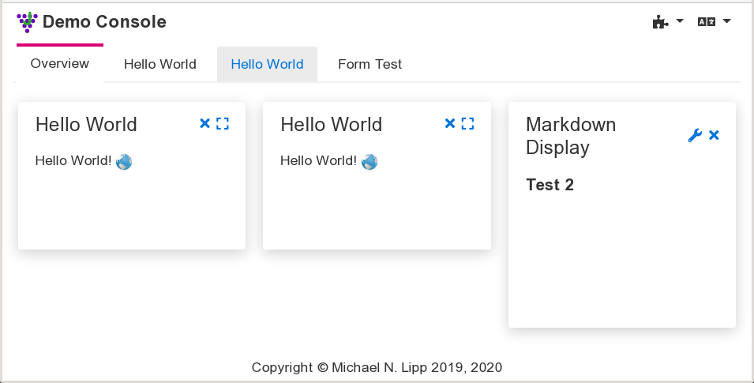

JGrapes Web Console 1.2.0
Overview
The Web Console components for the JGrapes framework provide the building blocks for a highly modular single page application, which can be easily adapted to different purposes.
The architecture can roughly be classified as a micro service driven micro frontend (with run-time integration via JavaScript), though it favors a common approach to styling for all components, which is unusual for most micro frontend architectures.
A JGrapes Web Console consists —from the user’s point of view— of a fixed frame with configurable content. The frame provides some means to add content (typically by using a dropdown menu) and to configure global settings such as the locale.
The content of the frame is provided by web console display components
or “conlets” for short. These components typically support a summary
or preview display that can be put on an overview panel in a dashboard
style and a large view that is supposed to fill the complete frame.
(They can also provide a “component content” which can be added to the page
or used in other conlets. See
Conlet.RenderMode
for a complete list of rendering modes.)
Tabs or a menu in a side bar can be used to switch between the overview panel(s) and the large views of the different conlets.
Console Components
The SPA frame is provided by a class derived from
ConsoleWeblet.
If you like (or can live with) the Freemarker
template engine, you should use
FreeMarkerConsoleWeblet
as base class. Using the latter class, all you have to do is implement
the constructor
and provide the required
templates.
The project currently provides one SPA provider:
- The
VueJsConsoleWebletimplements the pursued approach for providing a JGrapes web console. It’s a bit of a misnomer because while it makes use of Vue.js as a library in order to generate the DOM for the SPA frame, it does in no way imply that Vue.js must or should be used by the conlets. It includes a stylesheet that follows the rules outlined in the section “Styling Conlets” below. This stylesheet can easily be replaced by some other stylesheet to get a completely different appearance. (Actually, it’s possible to derive a class fromVueJsConsoleWebletthat only “overrides” the style sheet.)
There are two deprecated SPA providers in the project which are no longer maintained. They are kept as examples of how things can be done differently:
-
The
JQueryUiWebletprovides the SPA frame using the jQuerUi widgets and styles. It is the earliest attempt to implement a JGrapes web console. It has been deprecated due to its dependency on jQuerUi. -
The
Bootstrap4Webletuses Bootstrap 4 widgets and styles and assumes that conlets comply to this environment. Historically, it is the second attempt to implement a JGrapes web console and has been deprecated as well, because it doesn’t follow the principles outlined below in the section “Styling Conlets”.
The SPA frame consist of the HTML for the basic page layout and JavaScript
code for communicating with the server and managing the content. To
simplify the implementation, package org.jgrapes.webconsole.base
includes the JavaScript classes
Console and
Renderer.
Class Console
provides methods that are independent of a particular front-end
implementation such as establishing and maintaining a websocket
connection with the server.
Class Renderer
provides methods that simplify the implementation of a specific front-end.
Styling Conlets
At least for simple conlets, it should be possible to use them in differently styled consoles. This requirement implies that conlets are styled independent of a particular CSS framework.
Traditionally, CSS frameworks are “invasive” in the sense that the
framework’s presentation classes (and even worse, additional divs)
spread all over your HTML. Only a few
“lightweight frameworks”
such as Picnic base their styling on the native
HTML. The problem is that even semantic HTML 5 doesn’t provide enough
context to reliably style GUI widgets. If however, you add
WAI-ARIA attributes
to the markup (as you should anyway), it turns out that almost all styling
can be based on the HTML without adding presentation classes.
Using “ARIA augmented semantic HTML” is therefore the preferred approach for authoring conlets. You can find more about this approach in the overview of the project’s Vue component library. Combined with a web console’s CSS stylesheet that uses rules based on this kind of content this approach should lead to satisfactory results in typical cases.
Implementation Notes
Dynamic modularity for the SPA
Web applications are nowadays mostly developed as modular application. However, the modularity focuses on the code base. The various modules are then bundled by some tool and provided as monolithic resources. Optimization steps in this process may even remove JavaScript code from libraries if analysis shows that it isn’t invoked, thus making libraries only partially available.
The JGrapes web console objectives include the support for dynamic addition of conlets. Adding a conlet to a running system may require adding resources on the server side as well as in the SPA. The server side can easily be handled by a framework such as OSGi. Support in the SPA turns out to be a bit more difficult to implement.
Dynamically adding CSS
This can be implemented by adding additional link nodes to the
head node in the DOM with JavaScript. The added links cause the browser to
load the respective style sheets. Style sheets are applied as they become
available, so the asynchronous loading may, in the worst case, result in a
visible change of the pages’ appearance after its initial display.
Adding link nodes in the SPA is triggered on the server side by
firing AddPageResources
events.
Dynamically adding JavaScript
If everybody used ES6 modules, this wouldn’t be a problem either.
An import statement in ES6 JavaScript causes the interpreter to
block until the required module has been loaded. If ES6 modules
aren’t used, we have to resort to adding a script node to the
head node in the DOM. In this case the application has to make sure
that required resources are loaded before the requiring JavaScript.
In the JGrapes web console, the necessary dependency tracking and
ordered insertion of the script nodes is handled by a class that
obtains the required information from ScriptResource instances
as described in AddPageResources.
I180n support
The currently selected language is maintained in the lang attribute
of the html element. The renderer implementation must provide some
UI element that allows the user to modify the value of the lang
attribute. Whenever the value of the attribute is changed, the
server must be notified by calling
setLocale.
In response, the server fires a
SetLocale
event which is handled by the console weblet and all contlets.
Depending on the implementation on the client side, the console weblet
(or a conlet) can trigger a full reload of the page. Assuming that
the SPA frame can adapt to a change of language without reload,
a conlet can trigger a reload of its representations (the default behavior of
onSetLocale
as implemented by AbstractConlet)
or do nothing if its representation can also adapt to a change of the lang
attribute dynamically.
Component Packages
The web console components are based on the core framework and components.
org.jgrapes.webconsole.base- Components for building web consoles. Make sure to read this package’s description first.